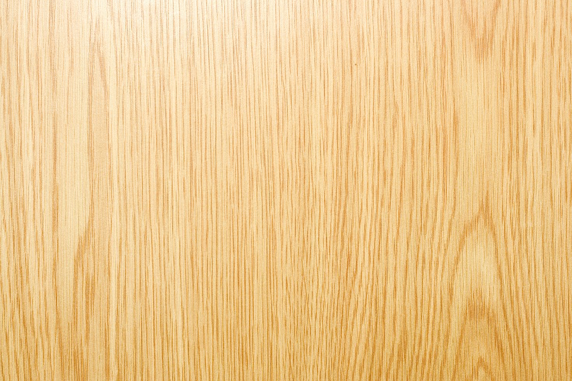

Este é um parágrafo normal
Este é outro parágrafo
Este é outro parágrafo, mas separado por uma quebra de linha e na fonte "Times New Roman"
Dá para ver claramente que este parágrafo está em itálico.
Temos também palavras subescritas e superescritas.
Olha, esta é uma informação importante.
Esta aqui está marcada.
Já esta está em enfase
Frase com tamanho menor
Este aqui está linhado.
Neste aqui, a linha está debaixo
Se eu não quiser mais, uso isto.
Pode ver que há dois espaços entre a palavra espaços
utilizando o &
, pode-se colocar vários símbolos, como o <
ou o >
← → ↑
Δ Λ Ω Φ
‰ ∑ ∞ × √ ± ⊕ ≠
© ® ™
£ ¥ €
< > ≤ ≥
exemplo de código:
public static void main(String[] args){
System.out.println("Olá Mundo!");
}
Se uma palavra for muito grande, por exemplo, paralelepípedo, e estiver na margem direita da janela, ao redimensioná-la, o restante da palavra pode ficar na outra linha, por exemplo, paralelepípedo, contendo, assim, um hífen na linha anterior
Posso fazer com que um texto muito grande seja alinhado à esquerda, à direita, ao centro ou mesmo justificado, melhorando a interface do seu site. É
só aplicar na "style" o seguinte comando text-align : justify;, por exemplo.
Se já existe uma tag style na tag head, há uma forma de sobrescrever as edições, usando a tag "span" da seguinte forma: <span> qualquer edição </span>
Pode-se usar <wbr/> para separar uma palavra hifenizada no final de uma linha para o começo de outra, por exemplo, super
Pode-se usar color: rgb( , , ); dentro de style para dar cor a algum texto
Pode-se, ainda, usar color:rgba( , , , ) para dar transparência ao texto (o último item vai de 0 a 1 em termos de transparente a opaco. Veja a diferença em relação a este texto
aqui tem um fundo que se enquadra no texto. Quanto maior for o texto, dependendo da resolução da imagem de fundo, mais visível é o fundo.
Pode-se notar que, nessa linha, há um fundo colorido
Pode-se trocar a cor usando, de outra forma, o estilo color:hsl( , %, %) , bem como deixando transparente
ou não, utilizando color:hsla( , %, %, ), assim: dessa forma
Abaixo, você verá um fundo:
Mas esse fundo é muito grande, ou a resolução dele é muito alta, o que pode ser resultado de um arquivo muito grande
Posso diminuir esse fundo assim: , mas a resolução e o tamanho do arquivo continuam sendo os mesmos
Esta imagem está em uma resolução menor: , mas no mesmo tamanho da de cima porque foi editada em algum editor de imagem. Vale lembrar que, ao editar, perdeu-se um pouco da qualidade da imagem.